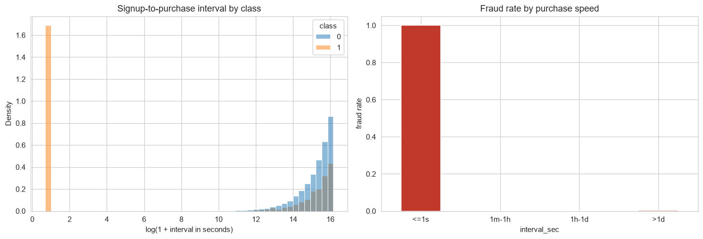
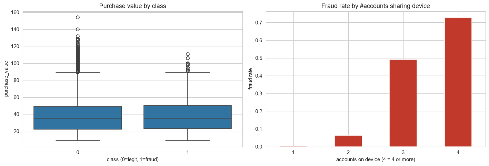
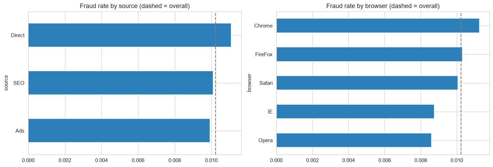
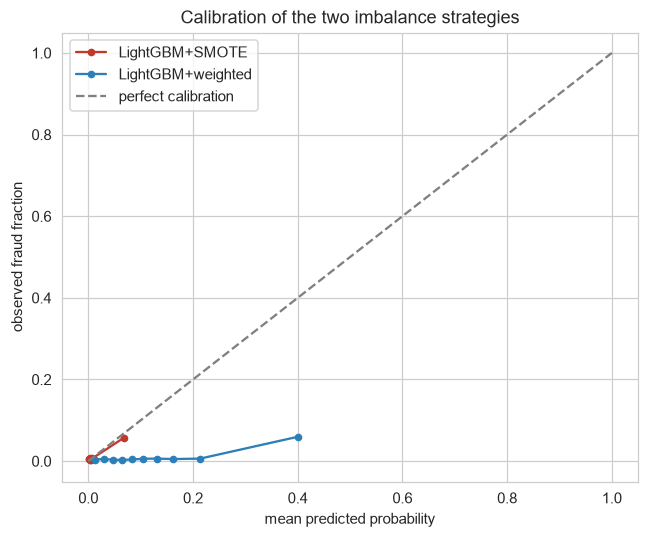
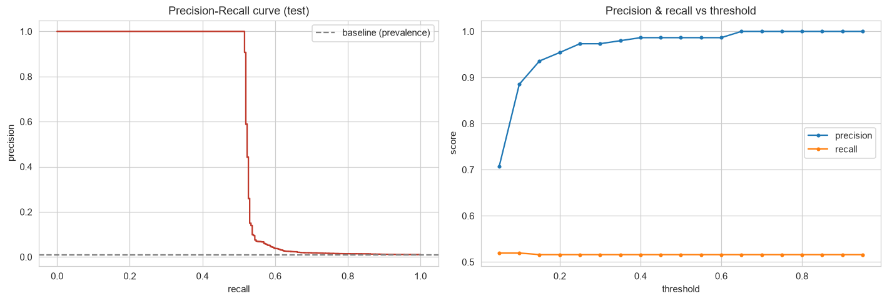
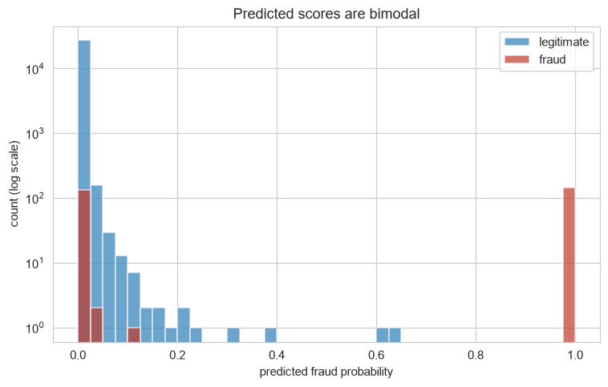
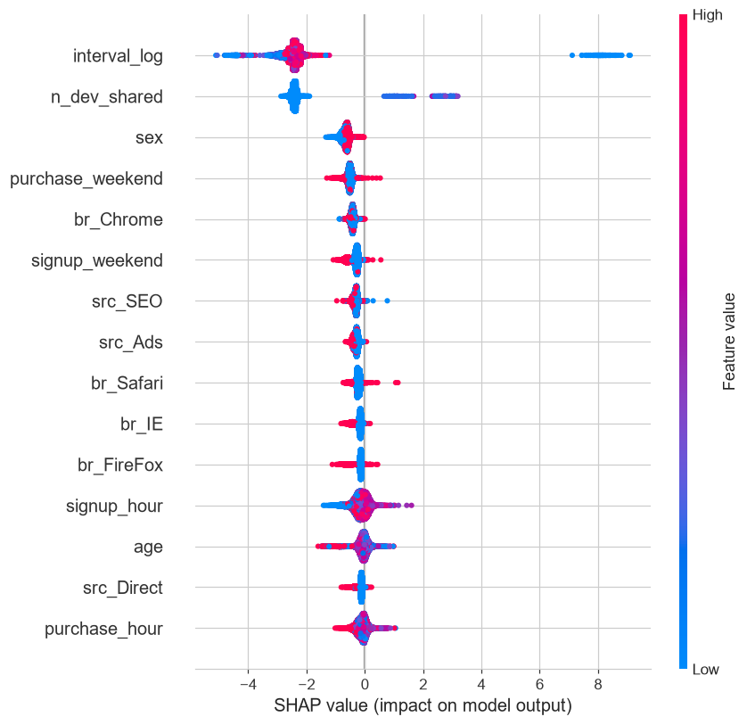
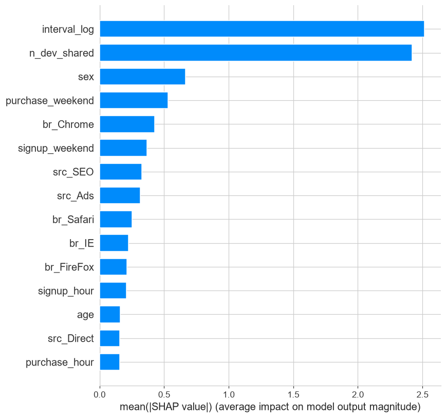

Executive Summary
An online electronics retailer must decide, on a new user's first transaction and in real time, whether it is fraud. The data holds 1,415 fraud cases in 138,376 transactions, a 1.02% rate. Two features do almost all the work: the signup-to-purchase interval, and the number of accounts sharing the buyer's device. The final model is LightGBM + SMOTE, tuned on PR-AUC.
Four findings
- Two features do the work; the third weighs nearly 4× less. Interval and device sharing score 2.52 and 2.42 in mean SHAP; the next feature reaches only 0.66. Age, value, source, and country carry no usable signal.
- Recall holds at 52%; every threshold trades only precision. Half of fraud is perfectly separable and half is invisible to these features, so no model or threshold reaches past recall 0.52 here.
- One rule catches the same 146; the model adds no catch at 0.59. Blocking purchases within one second of signup reproduces the operating point exactly, with zero false positives against the model's two.
- Separable fraud lasts 13 days; a time-split model scores PR-AUC 0.005. All 739 instant purchases fall in the first 13 days of the timeline, leaving a model trained before them nothing to key on.
Results at a glance
| Item | Result |
|---|---|
| Transactions analysed | 138,376 (1,415 fraud, 1.02%) |
| Final model | LightGBM + SMOTE, tuned on PR-AUC |
| Ranking quality (test) | PR-AUC 0.535, four models within noise |
| Operating point (OOF threshold 0.59) | flags 0.53% of traffic, catches 146/283 (51.6%), 2 false positives |
| Value-weighted fraud loss | $14,503 → $7,139, down 51% (95% CI 44–57%) |
| One-rule baseline | interval ≤ 1s catches the same 146 fraud cases, zero false positives |
The Imbalanced Data
The cost is asymmetric, and every downstream choice follows from it. A missed fraud is a bounded, one-off loss: the goods ship and a chargeback follows, on an order averaging about $38. A blocked good customer is a different loss: the immediate decline is cheap, but acquiring a first-time buyer was expensive and a declined first purchase can end the relationship before it starts — a loss that is diffuse and hard to price. Because a blocked first transaction is costlier than a missed one, the system is tuned for high precision and evaluated on PR-AUC instead of accuracy.
The dataset is course-provided and semi-synthetic: two CSVs, a transaction table of 138,376 rows by 11 columns and an IP-range-to-country lookup. The data is clean — no missing values, no duplicate rows. The single dominant fact is the imbalance: fraud is 1,415 of 138,376 transactions, roughly one in 97. Only about 1,415 fraud examples exist to learn from, so the model can latch only onto signals that are strong and repeated — which is why it ends up relying on two features and ignoring the rest.
Accuracy fails. Predicting "legitimate" for everyone scores 98.98% accuracy and catches zero fraud, so evaluation uses precision, recall, and PR-AUC — which, unlike ROC-AUC, is sensitive to the rare class.
Efficient IP→country recovery. Scanning the lookup table per row is O(n·m); instead both tables are sorted and joined in one pass with merge_asof, backfilling to Unknown past an upper bound. That leaves 14.7% of rows unmapped, with the United States the largest mapped country at 53,023. Country is later dropped for the reason in the next section.
The Two Signals
With only 1,415 fraud cases, small differences in fraud rate are easy to over-read, so every categorical comparison is paired with a significance test — a pattern counts only if it is both significant and large enough to matter. Two features clear that bar; the rest do not.
Purchase speed is the dominant signal. Legitimate users take a median of about 60 days between signing up and their first purchase; fraud takes a median of one second. Every one of the 739 transactions completed within one second of signup is fraud, and those account for 52.2% of all fraud in the data. The other half of fraud is spread across normal-looking intervals — the first sign of the recall ceiling.

Device sharing is the second signal; amount is not one. A device tied to a single account is almost never fraud (0.35%); once three or more accounts share one, the fraud rate is 58% — the fraud-ring fingerprint. Amount is nearly identical across classes (fraud averages $37.87 against a legitimate $36.93): fraudsters transact at ordinary amounts on purpose, and any "flag large purchases" rule would miss them.
| Accounts on device | Fraud rate | Transactions |
|---|---|---|
| 1 account | 0.35% | 130,212 |
| 2 or more | 11.73% | 8,164 |
| 3 or more | 58.19% | 842 |

Purchase value and demographics carry no signal. Among categorical fields, marketing source is not significant (chi-square p = 0.272) and weekend signup is not significant (p = 0.255). Browser and country reach significance (p = 0.007, p = 0.004) purely on sample size, with small spreads (browsers 0.86%–1.13%; larger countries 0.44%–1.91%). Country is therefore left out: the geographic signal is too weak to add over the noise it introduces.

The Scale Artifact
Three model families run the same leak-free flow: an 80/20 stratified split, device and IP sharing counts encoded with a CountEncoder fit on the training fold only, SMOTE placed inside the pipeline so synthetic samples never leak into a validation fold, and 5-fold CV scored on average precision. A fourth variant — LightGBM with scale_pos_weight and no resampling — tests whether SMOTE changes the ranking.
| Model (5-fold CV, SMOTE in-fold) | PR-AUC | sd | ROC-AUC |
|---|---|---|---|
| Logistic Regression | 0.535 | 0.052 | 0.757 |
| Random Forest | 0.541 | 0.049 | 0.762 |
| LightGBM (SMOTE) | 0.540 | 0.050 | 0.758 |
| LightGBM (class weight) | 0.541 | 0.052 | 0.763 |
All four land at PR-AUC 0.535 to 0.541, and the fold-to-fold standard deviation of about 0.05 is larger than any gap between models — they tie. Logistic regression matches the gradient-boosted models, because the signal lives in two features that every model finds; complexity buys nothing. The final model is LightGBM + SMOTE, chosen for speed and native handling of the feature types, tuned to learning_rate 0.05, n_estimators 400, num_leaves 31; on the test set at the default 0.5 cutoff it reads PR-AUC 0.535, ROC-AUC 0.764, precision 0.986, recall 0.516.

The SMOTE model and the class-weight variant give the same ranking ability (PR-AUC 0.536), yet at the fixed 0.5 cutoff the SMOTE model shows 98.6% precision and the weighted model 34%. The difference is entirely score scale: the weighted model's mean predicted probability is 0.125, twelve times the true 1.02% rate; the SMOTE model's mean is 0.010, close to the real rate. Precision at 0.5 tells you where that threshold sits on the score distribution, not which model ranks better. The SMOTE model is kept because it is near-calibrated, which lets its scores be read as probabilities when section 09 turns them into tiers.
The Recall Ceiling
The precision-recall curve holds precision near 1.0 up to recall 0.52, then falls off a cliff; recall stays flat at about 0.52 across every threshold while precision climbs — the threshold trades for precision, not recall. The score histogram explains why: predictions pile up near 0 or near 1, with almost nothing in between. The fraud near 1.0 is the instant-purchase half, trivially caught; the other half scores as low as legitimate traffic, and no threshold recovers it.


This is the feature set's honest ceiling — a property of the data, not a defect of the model. On the test set the tuned model catches 146 of 283 fraud cases (51.6%), with 2 false positives among 27,393 legitimate transactions (confusion matrix TN 27,391 / FP 2 / FN 137 / TP 146). Half the fraud is perfectly separable and half is invisible to these features, so no threshold or model reaches past recall 0.52 here.
This dataset is constructed so the instant-purchase and device-sharing patterns are unusually clean, which is why the top two features are so dominant and the instant-purchase cluster is 100% fraud. On live traffic these signals would be noisier, so real-world recall would likely be lower than 52%, not higher.
The Operating Point
The 0.5 threshold is not a business decision. A threshold scanned on the test set is optimized on the same data it is evaluated on, so the sweep runs on out-of-fold training predictions, and the test set is used once at the chosen threshold. The cost model prices a missed fraud at that row's purchase value plus a flat $15 chargeback fee, and a blocked good customer at a fixed penalty swept from $50 to $200; the $15 fee is itself an assumption, swept as well ($8, $15, $30).
| False-positive penalty | Threshold (OOF) | Test cost | Below do-nothing |
|---|---|---|---|
| $50 | 0.59 | $7,039 | 51% |
| $100 | 0.59 | $7,139 | 51% |
| $200 | 0.59 | $7,339 | 49% |
Do-nothing baseline (approve everything) costs $14,503 on the test set. The chargeback-fee sweep ($8, $15, $30) also leaves the threshold at 0.59 and the reduction at 51%.
The threshold lands on a plateau at 0.59 under every cost assumption, because of the bimodal score of section 04: with scores piled near 0 and near 1, every threshold between the modes selects the same transactions, and the exact cost assumption is not a sensitive input. Evaluated once on the test set, that operating point flags 0.53% of traffic, catches 146 of 283 fraud cases (precision 0.986, recall 0.516, two false positives), and cuts the value-weighted loss from $14,503 to $7,139, a 51% reduction.
The test set holds only 283 fraud cases, and the headline carries real sampling noise. Bootstrapping the test set 2,000 times puts the cost reduction at 51% with a 95% interval of [44%, 57%], and recall at 51.6% with [45.6%, 57.4%]. The intervals are wide enough that the headline should be quoted as "about half" instead of a three-digit point estimate, but no plausible resample changes the decision the number supports.
The One-Rule Baseline
The 51% reduction is measured against approving everything, which no operation actually does. The right comparison is against the simplest rule the exploration already handed us: purchases completed within one second of signup are all fraud — block them. An engineer could ship that in an afternoon. Before crediting the model with the reduction, it is worth checking how much of it this single rule already captures.
| Decision | Precision | Recall | False positives | Cost | Below do-nothing |
|---|---|---|---|---|---|
| Rule: interval ≤ 1s | 1.000 | 0.516 | 0 | $6,939 | 52% |
| Model at threshold 0.59 | 0.986 | 0.516 | 2 | $7,139 | 51% |
Same cost model, $100 false-positive penalty. Both catch the same 146 cases; the model adds zero catches the rule misses, and misses none the rule catches.
At this operating point, the rule and the model catch the same 146 fraud cases. The model adds no catch beyond the rule and misses none of the rule's; it is even slightly more expensive, because its two false positives are two more than the rule's zero. Everything the deployed model does here, a single if statement already does.
The rule catches 146; the model catches the same 146. What the trained model still provides is not incremental catch: it is a graded score that could support other operating points or a review queue, and a second signal — device sharing — that this threshold happens not to need. A rule fixed at "one second" is brittle to the cutoff and blind to everything but speed; the model carries a calibrated probability and a fraud-ring signal in reserve. Shipping the rule first and the model behind it is a legitimate order — but any claim about the model's worth has to be made in those terms, not as extra fraud caught at the operating point.
The Regime Shift
Two things about the headline evaluation are kinder than production: the split is random, with training and test rows from the same period; and the sharing counts are computed over the whole training window, while a live system knows only the history before each transaction. The final configuration is re-run under a time-ordered 80/20 split, with counts computed two ways — the same training-window CountEncoder, and a causal count where each row sees only its own history — isolating drift from feature computation.
| Split | PR-AUC | ROC-AUC | Precision @0.5 | Recall @0.5 |
|---|---|---|---|---|
| Random split (section 03 pipeline) | 0.535 | 0.764 | 0.986 | 0.516 |
| Time split, training-window counts | 0.005 | 0.490 | 0.000 | 0.000 |
| Time split, causal counts | 0.005 | 0.522 | 0.000 | 0.000 |
Under a time-ordered split the model collapses to chance: PR-AUC drops to 0.005, at the prevalence level, and ROC-AUC to about 0.5. Causal versus training-window counts makes no difference, so the collapse is not about feature computation — it is a regime change. Fraud thins from 1.16% in the first 80% of the timeline to 0.47% in the last 20%, and the separable cluster disappears entirely: all 739 instant purchases fall between January 1 and January 13, 2015, the late window contains none, and its fraud sits at normal-looking intervals with a median near 90 days.
The learnable signature is a burst, not a constant — it occupies 13 days at the start of the data. The headline describes what the model catches when instant-purchase and device-farming bursts are present, not a quiet month. The abruptness is partly an artifact of the semi-synthetic construction, which planted all separable fraud in a 13-day window, so this split overstates how suddenly a real system would decay. On live traffic the practical defense is regime monitoring (the share of instant purchases and the device-sharing rate) with retraining triggers, in place of this particular split.
The Two-Feature Model
For the "explain it to a non-technical stakeholder" question, SHAP attributes each prediction to its features, computed on the final model over the test set, and confirms the exploration. The interval feature scores 2.517 and device sharing 2.420; the third-ranked feature, sex, is 0.664, nearly four times smaller. In plain terms the model asks two questions — how long the buyer waited (a short gap pushes hard toward fraud), and how many accounts share the device (a high count is the fraud-ring pattern). Everything else contributes a small fraction of the top two's weight and is better read as minor correlation than a real driver.


This dataset is constructed so that the instant-purchase and device-sharing patterns are unusually clean, which is why the top two features are so dominant and the instant-purchase cluster is 100% fraud. On live traffic these signals would be noisier, and real-world recall would likely be lower than the 52% seen here, not higher.
The Score Tiers
The score distribution should drive the policy, in place of a round-number cutoff. Binning the final model's test-set scores shows what an actual tiering looks like — three bands, only two of which carry weight.
| Tier | Volume | Fraud rate | Fraud caught |
|---|---|---|---|
| High (≥ 0.7): decline + review | 0.53% | 100% | 146 |
| Medium (0.3–0.7): step-up | 0.01% | 0% | 0 |
| Low (< 0.3): auto-approve | 99.46% | 0.5% | 137 |
The high tier — 0.53% of traffic, 100% fraud in this sample — declines in real time and routes to manual review, catching 52% of all fraud with almost no false positives; section 06 showed a one-line rule reproduces it, so shipping the rule first and the model behind it is a legitimate rollout order. The low tier auto-approves with no friction, and this is where the missed half of fraud hides. The medium tier is nearly empty at four transactions: recovering some of the missed fraud means deliberately lowering the high-tier threshold into the low-precision region — a conscious trade, not a free tier.
Limits and next steps
- The learnable signal is a regime. All separable fraud sits in a 13-day burst; deployment needs regime monitoring (the share of instant purchases and the device-sharing rate) and retraining triggers more than a better classifier.
- The count features assume accumulated history. Device and IP counts are computed over the training window; the causal-count run in section 07 is the template for measuring that gap once stationary data exists.
- Recall is feature-limited, not model-limited. Moving the ceiling requires new signals such as device fingerprinting, cross-user velocity, or payment-instrument intelligence — not a bigger model.
- The data is semi-synthetic. On live traffic precision and recall should be monitored and the model retrained on confirmed labels from the manual-review queue.
- Roll out behind an A/B test on a small traffic slice, tracking fraud caught, false-alarm rate, and first-purchase conversion before a full launch.